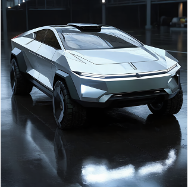

FilMaster
What is FilMaster?
TL; DR: FilMaster pioneers AI-driven filmmaking by automating the entire pipeline with cinematic principles.
What Makes FilMaster Different?
Built-in Cinematic Expertise
We don't just generate video; we apply cinematic principles in camera language design, cinematic rhythm control to create high-quality films, including a rich, dynamic audio landscape.
Fully Automated Production Pipeline
From script analysis to final render, FilMaster automates the entire process and delivers project files compatible with professional editing software.
In the vast desert, Godzilla and a lone Cybertruck engaged in a fierce battle, with the beast's footsteps shaking the ground, while the electric truck used its powerful engine and smart tech to desperately escape the endless sandstorm.


Explore Our Demos
A step-by-step visualization of the process from text to final film.
In their space journey, the blond Little Prince and the white fox met a sad rose, so the Prince gave it a star while the fox imitated the rose shaking its head to make it laugh.


Watch how FilMaster handles complex narratives and extended storylines.
As Riley enters her teenage years, her mind's Headquarters undergoes a sudden transformation, welcoming new Emotions. Anxiety takes charge, believing that constant worry will help Riley navigate adolescence, while Envy fuels self-doubt. Joy, Sadness, Anger, Fear, and Disgust struggle to adapt as Anxiety's influence grows, sidelining their roles. As Riley faces mounting pressure, the imbalance leads to emotional turmoil. Realizing that Anxiety alone cannot define Riley's experience, the original Emotions work to restore balance. In the end, Riley embraces the complexities of growing up, with both old and new Emotions learning to coexist. (script from film"InsideOut")


Generating multiple coherent episodes from a series of related prompts.
Nemo tried to play hide-and-seek but swam straight into an octopus's' hat, getting inked into a little black fish. (ocean, other ocean creatures)


Nemo raced with a baby turtle but accidentally crashed into a pile of starfish. (ocean)


Showcasing the ability to capture and convey specific moods and feelings.
He quietly heard footsteps outside the door. (living room, outside)


Explore Our Method
Abstract
AI-driven content creation has shown potential in revolutionizing film production. However, existing film generation systems struggle to understand and implement fundamental cinematic principles and thus fail to generate professional-quality films, particularly lacking diverse and expressive camera language and cinematic rhythm. This often results in templated visuals and unengaging narratives. To address these limitations, we introduce FilMaster, the first end-to-end AI-powered automated film generation system to integrate real-world cinematic principles for professional-grade film generation, yielding editable and industry-standard outputs. FilMaster is built upon two key cinematic principles: (1) learning cinematography from extensive real-world film data and (2) emulating professional, audience-centric post-production workflows. Inspired by these principles, FilMaster incorporates two stages: Reference-Guided Generation Stage which transforms user input to video clips, and Generative Post-Production Stage which transforms raw footage into audiovisual outputs by orchestrating both visual and auditory elements for cinematic rhythms. Our Reference-Guided Generation Stage highlights a Multi-shot Synergized RAG Camera Language Design module to guide the AI system to generate professional and expressive camera language in videos by retrieving reference clips from a vast corpus of 440,000 film clips. Our Generative Post-Production Stage emulates professional post-production by designing an Audience-Centric Cinematic Rhythm Control module, including a Rough Cut assembly, a Fine Cut process informed by simulated audience feedback, for the effective integration of audiovisual elements through video editing and sound design, to achieve engaging content and emotional impact. The whole system is empowered by generative AI models such as (M)LLMs, and video generation models. Furthermore, we introduce FilmEval, a comprehensive benchmark for evaluating AI-generated films across key cinematic dimensions. Extensive experiments demonstrate FilMaster’s superior performance, particularly in sophisticated camera language design and nuanced cinematic rhythm control, paving the way for generative AI in professional filmmaking.
This is a preview. Click on any video to view its full version
Baseline
+ Camera Language Design
+ Cinematic Rhythm Control
Extracted from the first 4 shots from "The Little Prince"